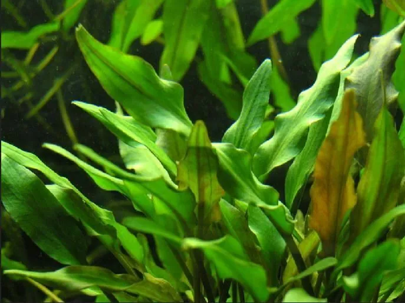

水生植物 · 植物界
温蒂椒草 Cryptocoryne wendtii

天南星科多年生水生草本，叶莲座状丛生、色泽多变，原产斯里兰卡溪流，是水族箱中耐阴而经典的中景水草。
- 分类
- 门被子植物门纲木兰纲目泽泻目科天南星科属隐棒花属
- 栖息环境
- 热带溪流、湿地与林下浅水，常生于沙砾底质、水流缓慢处
- 地理分布
- 原产斯里兰卡西南部，现世界各地水族箱广泛栽培
- 保护级别
- 暂无评估；野生居群受栖息地破坏与过度采集影响
物种志
温蒂椒草为天南星科隐棒花属多年生水生草本，具粗短的根状茎与莲座状叶丛。叶片披针形至卵形，长 10–25 厘米，叶面有泡状起伏，颜色从深绿、橄榄绿到红褐不等，叶柄短。佛焰苞花序自叶丛中抽出，苞片扭曲，肉穗花序细长，水下偶有开花。
温蒂椒草原产斯里兰卡西南部的溪流与湿地，常生长在流速缓慢、底质为沙砾的浅水中，适宜水深 5–30 厘米，水温 22–28 ℃，喜弱酸至中性软水与中低光照。它耐阴、生长稳健，是水族箱最经典的中景水草之一，叶色因品种与光照不同差异很大，有“绿温蒂”“褐温蒂”“红温蒂”等品系。椒草类对水质骤变敏感，换水过急或移栽后常出现“溶叶”，待适应后会重新萌发新叶；以侧芽分株繁殖。
形态与习性
- 株高叶长 10–25 厘米，莲座状丛生
- 水深适宜水深 5–30 厘米，可完全沉水
- 水质喜弱酸至中性软水，pH 6.0–7.5，忌骤变
- 光照中低光即可，强光需补充二氧化碳
- 底床沙砾或泥炭质底床，可加根肥
- 繁殖侧芽分株，待小株具 3–4 叶后分离
趣味知识
- 温蒂椒草叶色随品种与光照从深绿到红褐变化，是椒草中品系最丰富的一种。
- 它对水质骤变极敏感，换水过急或移栽后常整株“溶叶”，适应后会重新发叶。
- 水下栽培时偶尔会开出扭曲的佛焰苞，但结实极少。
- 在原产地斯里兰卡，它生长在溪流石缝间，根系常紧紧抓住沙砾底质。